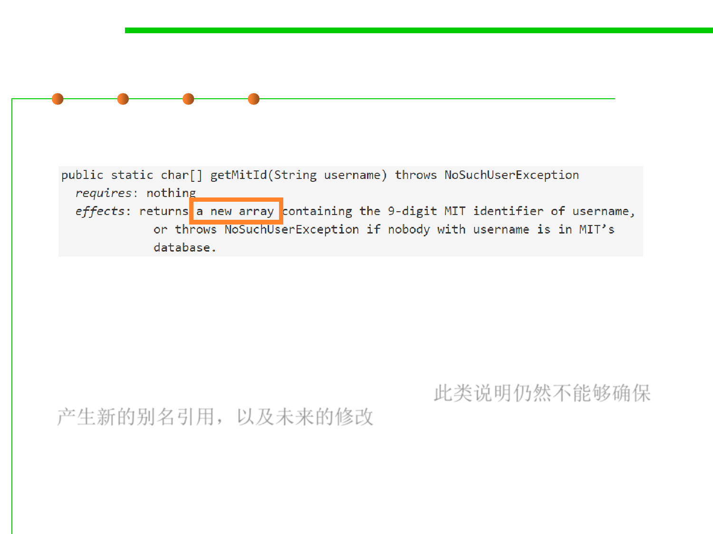

3.2 Designing Specification
Mutable objects reduce changeability
▪ How about this one?
▪ This spec at least says that the array has to be fresh.
▪ But does it keep the implementer from holding an alias to that new
array? Does it keep the implementer from changing that array or
reusing it in the future for something else? 此类说明仍然不能够确保
产生新的别名引用，以及未来的修改